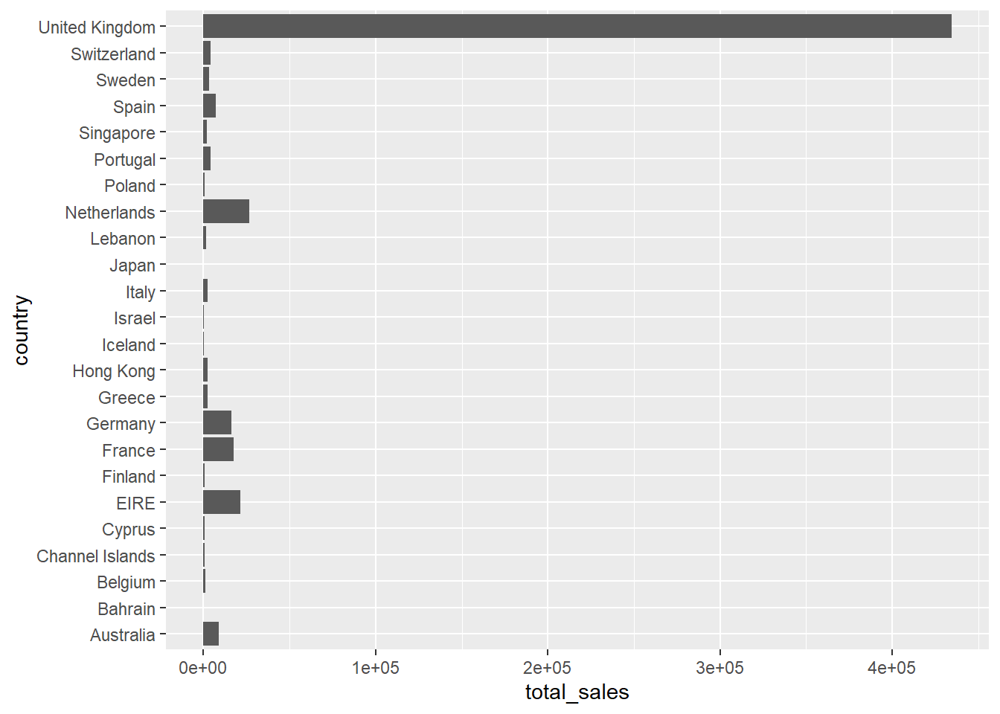

rm(list=ls())
library(DBI)
library(dbplyr)
library(duckdb)
library(readxl)
library(writexl)
library(googlesheets4)
library(tidyverse)
library(janitor)
options(tibble.width=Inf)moch_exam
Quarto
Quarto enables you to weave together content and executable code into a finished document. To learn more about Quarto see https://quarto.org.
Running Code
Load required library
Load Data
load data and change quantity datatype to double
df <- read_xlsx('comp646_sa.xlsx')
str(df)tibble [35,147 × 8] (S3: tbl_df/tbl/data.frame)
$ country : chr [1:35147] "United Kingdom" "United Kingdom" "United Kingdom" "United Kingdom" ...
$ year : num [1:35147] 2025 2025 2025 2025 2025 ...
$ month : num [1:35147] 1 1 1 1 1 1 1 1 1 1 ...
$ days : num [1:35147] 4 4 4 4 4 4 4 4 4 4 ...
$ invoice_no : chr [1:35147] "539993" "539993" "539993" "539993" ...
$ customer_id: num [1:35147] 13313 13313 13313 13313 13313 ...
$ quantity : chr [1:35147] "10" "25" "25" "5" ...
$ unit_price : num [1:35147] 1.95 0.42 0.42 2.1 1.25 1.95 3.25 1.45 2.95 1.95 ...df |>
mutate(quantity = parse_number(quantity))# A tibble: 35,147 × 8
country year month days invoice_no customer_id quantity unit_price
<chr> <dbl> <dbl> <dbl> <chr> <dbl> <dbl> <dbl>
1 United Kingdom 2025 1 4 539993 13313 10 1.95
2 United Kingdom 2025 1 4 539993 13313 25 0.42
3 United Kingdom 2025 1 4 539993 13313 25 0.42
4 United Kingdom 2025 1 4 539993 13313 5 2.1
5 United Kingdom 2025 1 4 539993 13313 10 1.25
6 United Kingdom 2025 1 4 539993 13313 10 1.95
7 United Kingdom 2025 1 4 539993 13313 6 3.25
8 United Kingdom 2025 1 4 539993 13313 12 1.45
9 United Kingdom 2025 1 4 539993 13313 6 2.95
10 United Kingdom 2025 1 4 539993 13313 8 1.95
# ℹ 35,137 more rowssum(is.na(df['customer_id']))[1] 13235Question 2
Compute the revenue stream for each item (row) using unit_price ∗ quantity.Then aggregate the revenues by country and sort them in descending order by gross revenue.
df_country <-
df |>
mutate(quantity = parse_number(quantity),
revenue = unit_price *quantity) |>
group_by(country) |>
summarize(total_sales = sum(revenue)) |>
arrange(desc(total_sales))
df_country# A tibble: 24 × 2
country total_sales
<chr> <dbl>
1 United Kingdom 434308.
2 Netherlands 26611.
3 EIRE 21657.
4 France 17503.
5 Germany 16451.
6 Australia 9018.
7 Spain 7179.
8 Switzerland 4231.
9 Portugal 3998.
10 Sweden 3446.
# ℹ 14 more rowsQuestion 3
Create a bar chart using ggplot2 that displays sales by country in descending order. Which country generates the highest revenue for the company?
As we can see from the chart, United Kingdom has the highest revenue.
ggplot(df_country, aes(y = country, x = total_sales)) +
geom_col()
Question 4
What does the following function do, and what is its expected output?
It is a function to summarize selected country each day’s total sales, and order by days asceding, and default country is New Zealand. result will return nothing, as there is no sale data for New Zealand
df<-
df |>
mutate(revenue = unit_price*parse_number(quantity))
daily_sales<-
function(data, selected_country=
'New Zealand') {
data$days = as.character(data$days)
data |>
filter(country == selected_country) |>
select(country, year, month, days, revenue) |>
group_by(days) |>
summarize(daily_revenue = sum(revenue)) |>
mutate(days = parse_number(days)) |>
arrange(days)
}
df |>
daily_sales()# A tibble: 0 × 2
# ℹ 2 variables: days <dbl>, daily_revenue <dbl>Question 5
Use the function and create a ggplot chart for output with respect to the United Kingdom.
df |>
daily_sales('United Kingdom') |>
ggplot(aes(x=days, y=daily_revenue))+
geom_line()
Question 6
Calculate the total revenue generated by each customer.
Who is our top customer- the one generating the highest revenue?
customer_id=14646 has the highest revenue as we can see from the output
df |>
drop_na(customer_id) |>
group_by(customer_id) |>
summarize(total = sum(revenue,na.rm = TRUE)) |>
arrange(desc(total)) |>
slice(1)# A tibble: 1 × 2
customer_id total
<dbl> <dbl>
1 14646 26477.Question 7
Calculate the revenue for each invoice. Which invoice generated the highest revenue?
invoice_no =541431 has the highest revenue
df |>
group_by(invoice_no) |>
summarize(total = sum(revenue)) |>
arrange(desc(total)) |>
slice(1)# A tibble: 1 × 2
invoice_no total
<chr> <dbl>
1 541431 77184.Question 8
It seems unusual that the highest invoice revenue exceeds the revenue from our top customer.
Why does this seem odd? Filter the data for:
the invoices of the customer who generated the highest overall revenue
df |> filter(customer_id == 14646)# A tibble: 220 × 9 country year month days invoice_no customer_id quantity unit_price <chr> <dbl> <dbl> <dbl> <chr> <dbl> <chr> <dbl> 1 Netherlands 2025 1 14 541206 14646 48 0.29 2 Netherlands 2025 1 14 541206 14646 32 8.5 3 Netherlands 2025 1 14 541206 14646 24 4.25 4 Netherlands 2025 1 14 541206 14646 32 4.25 5 Netherlands 2025 1 14 541206 14646 20 0.85 6 Netherlands 2025 1 14 541206 14646 96 1.45 7 Netherlands 2025 1 14 541206 14646 96 1.45 8 Netherlands 2025 1 14 541206 14646 72 3.39 9 Netherlands 2025 1 14 541206 14646 64 3.75 10 Netherlands 2025 1 14 541206 14646 96 1.65 revenue <dbl> 1 13.9 2 272 3 102 4 136 5 17 6 139. 7 139. 8 244. 9 240 10 158. # ℹ 210 more rowsthe invoice with the highest individual revenue.
df |> filter(invoice_no == 541431)# A tibble: 1 × 9 country year month days invoice_no customer_id quantity unit_price <chr> <dbl> <dbl> <dbl> <chr> <dbl> <chr> <dbl> 1 United Kingdom 2025 1 18 541431 12346 74215 1.04 revenue <dbl> 1 77184.
customer id for ths invoice no is 12346, filter with this customer id
df |>
filter(customer_id == 12346)# A tibble: 2 × 9
country year month days invoice_no customer_id quantity unit_price
<chr> <dbl> <dbl> <dbl> <chr> <dbl> <chr> <dbl>
1 United Kingdom 2025 1 18 541431 12346 74215 1.04
2 United Kingdom 2025 1 18 C541433 12346 -74215 1.04
revenue
<dbl>
1 77184.
2 -77184.We can see this customer has this invoice returned/refunded, therefore the total revenue of this customer is 0, that is why the highest invoice amount is not on that highest revenue customer